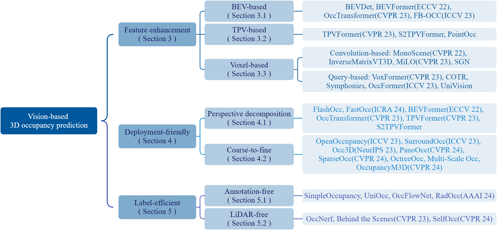

本論文は、自動運転における視覚ベースの3次元オキュパンシー予測（3D occupancy prediction）を包括的にレビューしたサーベイである。著者は北京航空航天大学のYanan Zhang、Jinqing Zhang、Zengran Wang、Junhao Xu、Di Huangである。本研究はSpringer Frontiers of Computer Scienceに掲載された（DOI: 10.1007/s11704-024-40443-5）。
視覚ベースの3Dオキュパンシー予測とは、複数カメラ画像を入力として、自動運転車両周囲の3Dボクセルグリッドの占有状態と意味クラスを予測するタスクである。従来の物体中心型（object-centric）な知覚タスクと比べて、より細粒度な環境理解が可能であり、コスト効率の高い知覚システムに適した手法として注目を集めている。多数の研究がその優位性を実証してきたにもかかわらず、この急速に発展する分野に特化したレビューはこれまで存在しなかった。
予測モデルは複数視点のカメラ画像を受け取り、各ボクセルを「空」または「占有」に分類するとともに、定義済みクラスの意味ラベルを付与する。学習時には、可視性マスク（カメラで観測可能な領域を示す）付きの占有アノテーションを用いて分類損失を最小化する。
密な3Dオキュパンシーアノテーションは、以下の4ステップで生成される。
主要なベンチマークには次のものが含まれる。
評価指標としてはmIoU（意味セグメンテーション性能を評価）とIoU（意味ラベルを問わないシーン補完を評価）が標準的に用いられる。両者は「mIoUを高めるためにIoUを単純に下げる」ことが可能という緊張関係にあるため、モデルは両方で優れた性能を示す必要がある。
この分野における根本的な3つの障壁を著者らは以下のように整理している。
BEV（Bird's-Eye View）表現を活用し、2つの投影パラダイムを採用する。前向き投影（Forward Projection）はLifting, Splat, Shoot（LSS）で2D特徴を引き上げ、疎な投影を生成する。後向き投影（Backward Projection）は3DボクセルをProject 2D平面に投影して密な特徴を得るが、点が判別困難な同一特性を持つ問題がある。
FB-OCCは両アプローチを組み合わせ、「結合深度・意味事前学習、統一ボクセル-BEV表現、モデル拡大」により最適な密度と一貫性を実現し、主要ベンチマーク（Occ3D-nuScenesで52.79 mIoU）で首位を獲得した。
Tri-Perspective View（TPV）表現は、異なる軸に沿った情報を同時に捉える「3つの直交投影面」で3D環境をモデル化する。TPVFormerは、TPVグリッドと画像特徴間のクロスアテンションを持つTransformerエンコーダを採用し、情報損失を最小化しながらクロスビュー相互作用を実現する。S2TPVFormerなどの時間拡張版は時間融合を導入し、PointOccは近傍領域のより細かなモデリングのために円筒座標を用いてTPV表現を点群分布に適応させる。
畳み込みベースの代表例であるMonoSceneは、専用メカニズムを持つU-Netアーキテクチャを実装する。
クエリベース手法では、VoxFormerは推定深度を事前情報として占有クエリを選択しDeformable Attentionを適用する。OccFormerはデュアルパスTransformerで複数方向のボクセルをエンコードし、ローカル詳細とグローバルシーン理解を組み合わせる。
FlashOccは3D畳み込みを2D畳み込みに置き換え、「チャンネル-高さ変換」でBEV特徴を占有ロジットに変換するパイオニア的手法である。軽量構成で6.5msのレイテンシと2600Mのメモリ使用を実現する。
OpenOccupancyは低解像度クエリ予測の後、占有ボクセルのみを選択的に精緻化するカスケード方式を実装する。SparseOccは完全スパースアーキテクチャを採用し、密な3D特徴なしで非空領域のみを再構成することで高効率な予測を実現する。
3Dオキュパンシーアノテーションを不要にするため、3D予測を2Dマップとしてレンダリングして監視する。UniOccはボクセル密度と意味ロジットを生成する独立MLPを用い、ボリュームレンダリングでLiDAR由来ラベルにより監視された深度・意味マップを生成する。
OccNeRFはLiDAR依存を完全に排除し、マルチフレーム測光一貫性で深度監視を行う「パラメータ化オキュパンシーフィールド」とボリュームレンダリングを採用する。
制御可能なシーン合成では、WoVoGenが3Dオキュパンシーからリアルなマルチビュー画像へのボリューム認識型拡散を実装し、本物の空間情報を保ちながらシーン変更を可能にする。ワールドモデルへの統合では、OccWorldやUniWorldが3Dオキュパンシーをワールドモデルの観測として採用し、未来のシーン進化を予測する。
マルチエージェント協調では、CoHFFが視覚ベースの協調フレームワークの先駆けとして、車両が「他の交通要素と補完的な情報を共有」することを可能にする。これは単一エージェントのボトルネック（遮蔽、限定的な測距範囲、視野角制限）に対処するが、精度と帯域幅のトレードオフという課題もある。
オープン語彙予測（OVO）では、固定された2Dセグメンターとテキストエンコーダを通じて定義外の意味カテゴリへ拡張する。4Dオキュパンシー予測（Cam4DOcc）では、時間次元を導入して将来の占有状態を予測し、動的シーン進化をモーション計画に役立てる。
本サーベイは、視覚ベースの3Dオキュパンシー予測の全体像を「特徴強化」「デプロイフレンドリー」「ラベル効率」の3軸で整理した包括的な文献である。直接ボクセルベース手法が投影ベース手法より優れた性能を示すこと、BEV表現が前後向き投影の組み合わせで依然競争力を持つこと、そしてレンダリングベースの2D監視によりアノテーションフリー手法が教師あり学習に匹敵できることが主要な知見として示されている。関連論文・データセット・コードのコレクションは github.com/zya3d/Awesome-3D-Occupancy-Prediction で継続更新されている。